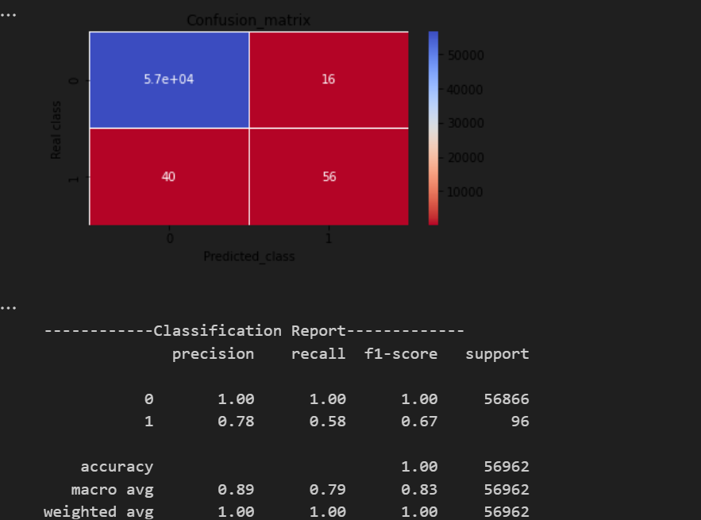

Contexte & objectif
Détection automatique des transactions frauduleuses dans un jeu de données fortement déséquilibré. Objectif : maximiser la détection (rappel) tout en maîtrisant les faux positifs par calibration du seuil et choix de métriques adaptées (PR-AUC, F1).
Méthodologie
- Exploration, contrôle des valeurs manquantes, analyse des distributions et corrélations.
- Prétraitement : scaling de
Amountet/ouTime, split stratifié train/test. - Équilibrage : undersampling/oversampling et SMOTE au sein d’un pipeline.
- Modèles comparés : Régression Logistique, SVM, Arbre de Décision, RandomForest.
- Validation : GridSearchCV, métriques F1/Recall/PR-AUC, matrice de confusion, calibration du seuil.
Pipeline de préparation
import pandas as pd
from sklearn.model_selection import train_test_split
from sklearn.preprocessing import StandardScaler
from sklearn.compose import ColumnTransformer
df = pd.read_csv("creditcard.csv")
X = df.drop(columns=["Class"])
y = df["Class"]
num_to_scale = ["Amount", "Time"]
preproc = ColumnTransformer(
[("scaler", StandardScaler(), num_to_scale)],
remainder="passthrough"
)
X_train, X_test, y_train, y_test = train_test_split(
X, y, test_size=0.2, stratify=y, random_state=42
)Équilibrage et modèles
Exemple de pipeline avec SMOTE et RandomForest, puis grille d’hyperparamètres et validation croisée. SMOTE est appliqué uniquement sur le set d’entraînement via le pipeline pour éviter les fuites.
from imblearn.pipeline import Pipeline
from imblearn.over_sampling import SMOTE
from sklearn.ensemble import RandomForestClassifier
from sklearn.model_selection import GridSearchCV
from sklearn.metrics import classification_report
pipe_rf = Pipeline(steps=[
("prep", preproc),
("smote", SMOTE(random_state=42, k_neighbors=5)),
("clf", RandomForestClassifier(random_state=42, n_jobs=-1))
])
param_grid = {
"clf__n_estimators": [200, 400],
"clf__max_depth": [None, 12, 20],
"clf__min_samples_split": [2, 5],
}
grid = GridSearchCV(
pipe_rf, param_grid=param_grid, cv=5,
scoring="f1", n_jobs=-1, verbose=1
)
grid.fit(X_train, y_train)
y_pred = grid.predict(X_test)
print(grid.best_params_)
print(classification_report(y_test, y_pred, digits=3))Exemple SVM avec rééquilibrage intégré via la pondération des classes, utile lorsque l’échantillonnage n’est pas souhaité :
from sklearn.svm import SVC
from sklearn.model_selection import StratifiedKFold
pipe_svm = Pipeline(steps=[
("prep", preproc),
("clf", SVC(kernel="rbf", class_weight="balanced", probability=True, random_state=42))
])
param_svm = {
"clf__C": [0.5, 1, 4],
"clf__gamma": ["scale", 0.1, 0.01]
}
cv = StratifiedKFold(n_splits=5, shuffle=True, random_state=42)
grid_svm = GridSearchCV(pipe_svm, param_grid=param_svm, cv=cv, scoring="f1", n_jobs=-1)
grid_svm.fit(X_train, y_train)Calibration du seuil
Pour maîtriser les faux positifs, la prédiction probabiliste est calibrée par recherche d’un seuil optimal selon le contexte métier (maximisation du F1 ou contrainte sur le rappel).
import numpy as np
from sklearn.metrics import f1_score, precision_recall_curve
# Exemple sur le meilleur modèle au format predict_proba
proba = grid.best_estimator_.predict_proba(X_test)[:, 1]
prec, rec, thr = precision_recall_curve(y_test, proba)
# Seuil qui maximise F1
def best_f1_threshold(y_true, p):
ts = np.linspace(0.01, 0.99, 99)
scores = [f1_score(y_true, (p >= t).astype(int)) for t in ts]
t_best = ts[int(np.argmax(scores))]
return t_best, max(scores)
t_star, f1_star = best_f1_threshold(y_test, proba)
y_pred_thr = (proba >= t_star).astype(int)
print("Seuil optimal F1:", round(t_star, 3))
print(classification_report(y_test, y_pred_thr, digits=3))Métriques & rapport
from sklearn.metrics import confusion_matrix, classification_report, average_precision_score, roc_auc_score
cm = confusion_matrix(y_test, y_pred_thr)
print(cm)
print(classification_report(y_test, y_pred_thr, digits=3))
pr_auc = average_precision_score(y_test, proba) # PR-AUC
roc = roc_auc_score(y_test, proba) # ROC-AUC
print("PR-AUC:", round(pr_auc, 4), "ROC-AUC:", round(roc, 4))Visualisations

import matplotlib.pyplot as plt
from sklearn.metrics import roc_curve, precision_recall_curve
# Courbe ROC
fpr, tpr, _ = roc_curve(y_test, proba)
plt.figure()
plt.plot(fpr, tpr, label="ROC")
plt.plot([0,1],[0,1], linestyle="--")
plt.xlabel("FPR")
plt.ylabel("TPR")
plt.title("ROC")
plt.legend()
plt.tight_layout()
plt.show()
# Courbe PR
prec, rec, _ = precision_recall_curve(y_test, proba)
plt.figure()
plt.plot(rec, prec, label="PR")
plt.xlabel("Recall")
plt.ylabel("Precision")
plt.title("Precision-Recall")
plt.legend()
plt.tight_layout()
plt.show()Résultats
- RandomForest avec SMOTE : rappel élevé sur la classe fraude et F1 robuste après calibration.
- SVM (class_weight="balanced") : bon compromis rappel/précision avec tuning de C et γ.
- Rapports complets : F1/Recall/Precision par classe, PR-AUC et ROC-AUC sur l’ensemble de test.
Livrables
- Notebook/Script ML, pipelines et grilles d’hyperparamètres documentés.
- Rapports de métriques, matrices de confusion, courbes ROC/PR.
- Proposition de monitoring : suivi du drift, recalibrage périodique des seuils, alerting.